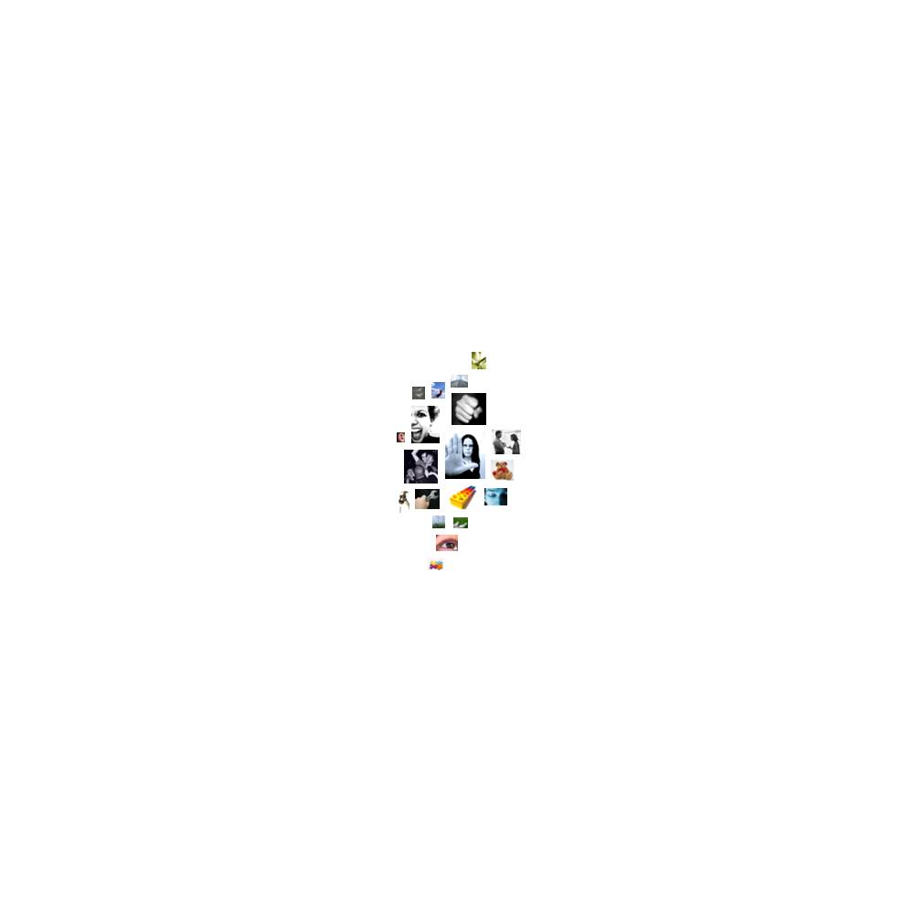

rnc-polcorpus.txt.html
  restraint
restraint stop, boundless, must, taxes, tax, tax, determined, determination, limitless, prevail, captured, shut, controlled, jail, determination, captured, locked, shut, must, policies, policies, policies, stop, must, prevent, policy, permission, authorize, obligation, prevailed, policeman, police, must, determined, reign, stop, necessary, police, determined, arrested, must, stopped, must, determined, necessary, determined, police, police, police, permitted, stop, necessary, prevail, police, catches, must, determined, prevail, must, tax, must, tax, must, tax, must, tax, tax, tax, must, tax, tax-free, must, must, policies, must, taxes, control, must, insisting, require, must, policies, penalty, taxes, taxes, policies, tax, policies, requires, must, must, strict, must, determine, determined, prevail, capturing, arrests, detained, requires, must, authorize, refused, must, must, coerced, police, punishment, prisoners, policy, determined, tax, determined, guard, required, prisoners, prisoner, requires, boundless, police, require, determined, summons, determined, necessity, must, must, must, must, must, must, must, must, obligation, summon, limited, refusal, prisons, necessary, determination, determination, necessary, stopped, limitations, determine, blockade, policy, shut, guard, must, bar, stop, boundless, must, taxes, tax, tax, determined, determination, limitless, prevail, captured, shut, controlled, jail, determination, captured, locked, shut, must, policies, policies, policies, stop, must, prevent, policy, permission, authorize, obligation, prevailed, policeman, police, must, determined, reign, stop, necessary, police, determined, arrested, must, stopped, must, determined, necessary, determined, police, police, police, permitted, stop, necessary, prevail, police, catches, must, determined, prevail, must, tax, must, tax, must, tax, must, tax, tax, tax, must, tax, tax-free, must, must, policies, must, taxes, control, must, insisting, require, must, policies, penalty, taxes, taxes, policies, tax, policies, requires, must, must, strict, must, determine, determined, prevail, capturing, arrests, detained, requires, must, authorize, refused, must, must, coerced, police, punishment, prisoners, policy, determined, tax, determined, guard, required, prisoners, prisoner, requires, boundless, police, require, determined, summons, determined, necessity, must, must, must, must, must, must, must, must, obligation, summon, limited, refusal, prisons, necessary, determination, determination, necessary, stopped, limitations, determine, blockade, policy, shut, guard, must, bar, taxes, must, determination, prison, police, taxes, must, determination, prison, police
 chaos
chaos chance, chance, confusion, chance, confused, chance, ruins, chance, chance, chance, ruins, ruined, chance, confuse, chance, chance, confusion, chance, confused, chance, ruins, chance, chance, chance, ruins, ruined, chance, confuse, chances, chances
 aggression
aggression hit, cuts, injury, enemies, harm, knives, enemy, hatred, weapons, war, war, enemy, destruction, war, killed, attack, killers, killed, kill, threat, threats, weapons, weapons, threat, weapons, weapons, weapons, war, fighting, fought, enemy, war, war, attack, violence, hatreds, resentments, opposed, war, war, attacked, attacked, enemy, weapons, attack, critics, war, opposed, war, combat, disagreed, disagreement, afflicted, killed, tyrants, doubt, attacked, shot, weapons, destruction, doubt, defeat, threat, attack, attacked, defeat, attacks, attack, attack, attacked, murdered, murder, attack, destruction, destroying, war, defeated, ridicule, defeat, ridiculed, stubbornness, criticism, invaded, war, war, war, war, opposite, combatting, combatting, opposed, war, enemies, raging, hurts, threat, critical, destroy, slaughtered, weapons, destruction, weapon, destruction, weapons, destruction, violence, hatred, hatred, anger, blaming, slaughter, war, war, torn, ripped, defeat, battles, war, battle, attacks, attack, war, killers, threaten, aggressive, opposed, opposes, opposed, opposed, opposed, stability, fought, striking, weapons, threat, attacks, fighting, weapons, army, fighting, killed, aggression, weapons, destruction, threats, threat, threat, murderous, violence, resentments, violence, fight, stability, army, enemies, struggle, defeating, shot, battle, combat, war, cut, hate, kill, fighting, cruelty, seize, doubters, stability, rebellion, seized, battle, wounded, enemy, doubt, struggle, struggle, defeat, threat, struggles, war, war, war, war, defeating, war, attacks, threat, war, army, struggle, threat, fighter, hate, wounded, battle, war, attacked, cut, football, strangled, war, war, threat, enemies, war, fight, disputing, fight, enemies, weapons, war, struggle, cruel, enemies, doubt, war, wars, fight, war, enemy, destroyed, hostile, anger, attacked, tyrants, disagreements, war, doubt, war, combat, threatens, struggle, doubt, doubt, defeat, scourge, afflicts, war, damaged, war, conflict, war, war, war, battlefield, threats, threatened, anger, fight, enemies, fight, enemies, injuring, destroying, critical, attack, bloody, criticize, war, critics, attacks, war, war, threat, critics, cruelty, torture, destroyed, weapons, threat, weapons, threat, destruction, destroying, fight, stability, fight, hateful, war, hate, enemies, destroy, disagreement, arguing, argument, argue, enemies, war, enemy, fight, hatred, fight, fight, war, war, kill, critical, torn, fight, army, threatened, army, army, protest, protester, abuse, war, opposed, weapons, war, war, weapon, opposed, opposed, strikes, opposed, shot, opposed, strikes, opposed, war, opposed, shot, war, protestor, blamed, harms, threats, war, fight, war, enemies, shooter, tempered, robbed, attack, hit, cuts, injury, enemies, harm, knives, enemy, hatred, weapons, war, war, enemy, destruction, war, killed, attack, killers, killed, kill, threat, threats, weapons, weapons, threat, weapons, weapons, weapons, war, fighting, fought, enemy, war, war, attack, violence, hatreds, resentments, opposed, war, war, attacked, attacked, enemy, weapons, attack, critics, war, opposed, war, combat, disagreed, disagreement, afflicted, killed, tyrants, doubt, attacked, shot, weapons, destruction, doubt, defeat, threat, attack, attacked, defeat, attacks, attack, attack, attacked, murdered, murder, attack, destruction, destroying, war, defeated, ridicule, defeat, ridiculed, stubbornness, criticism, invaded, war, war, war, war, opposite, combatting, combatting, opposed, war, enemies, raging, hurts, threat, critical, destroy, slaughtered, weapons, destruction, weapon, destruction, weapons, destruction, violence, hatred, hatred, anger, blaming, slaughter, war, war, torn, ripped, defeat, battles, war, battle, attacks, attack, war, killers, threaten, aggressive, opposed, opposes, opposed, opposed, opposed, stability, fought, striking, weapons, threat, attacks, fighting, weapons, army, fighting, killed, aggression, weapons, destruction, threats, threat, threat, murderous, violence, resentments, violence, fight, stability, army, enemies, struggle, defeating, shot, battle, combat, war, cut, hate, kill, fighting, cruelty, seize, doubters, stability, rebellion, seized, battle, wounded, enemy, doubt, struggle, struggle, defeat, threat, struggles, war, war, war, war, defeating, war, attacks, threat, war, army, struggle, threat, fighter, hate, wounded, battle, war, attacked, cut, football, strangled, war, war, threat, enemies, war, fight, disputing, fight, enemies, weapons, war, struggle, cruel, enemies, doubt, war, wars, fight, war, enemy, destroyed, hostile, anger, attacked, tyrants, disagreements, war, doubt, war, combat, threatens, struggle, doubt, doubt, defeat, scourge, afflicts, war, damaged, war, conflict, war, war, war, battlefield, threats, threatened, anger, fight, enemies, fight, enemies, injuring, destroying, critical, attack, bloody, criticize, war, critics, attacks, war, war, threat, critics, cruelty, torture, destroyed, weapons, threat, weapons, threat, destruction, destroying, fight, stability, fight, hateful, war, hate, enemies, destroy, disagreement, arguing, argument, argue, enemies, war, enemy, fight, hatred, fight, fight, war, war, kill, critical, torn, fight, army, threatened, army, army, protest, protester, abuse, war, opposed, weapons, war, war, weapon, opposed, opposed, strikes, opposed, shot, opposed, strikes, opposed, war, opposed, shot, war, protestor, blamed, harms, threats, war, fight, war, enemies, shooter, tempered, robbed, attack, disagree, fierce, relentless, critics, critics, ridiculous, hit, attack, fighting, destroy, opposite, defeat, hate, hate, hate, hate, hate, hate, fight, fights, struggle, fight, shot, combat, attack, attack, attack, disagree, fierce, relentless, critics, critics, ridiculous, hit, attack, fighting, destroy, opposite, defeat, hate, hate, hate, hate, hate, hate, fight, fights, struggle, fight, shot, combat, attack, attack, attack
 anxiety
anxiety terrorists, terrorists, terrorists, terrorists, terrorist, terror, terror, terrorists, terrorists, terror, terrorists, terrorism, terrorism, dangerous, crisis, terrorism, terrorism, horror, terrorism, terrorism, terrorists, terrorists, terrorists, terrorist, terrorists, fear, terrorists, terrorists, terrorist, terrorist, terrorism, terrorism, terror, terrorist, terrorists, terrorism, terrorism, terrorism, terrorism, terrorists, trouble, terrorists, terrorism, terrorism, terrorist, terrorism, terrorism, horrific, terrorism, terrorism, terrorists, terrorism, terrorism, terrorist, terror, frightened, worried, worry, afraid, terrorism, terrorists, terrorists, terrorist, terrorist, terror, terrorist, terror, terrorists, terrorists, terrorist, terrorists, terrorists, fear, terrorists, terrorists, fear, afraid, terror, crisis, frightened, alarmed, worry, terror, worry, horror, terrorists, horrific, crisis, terror, distress, terrorism, avoiding, terrorism, terrorists, dangerous, crisis, fear, terror, dangerous, terrorists, terrorists, terrorists, terrorists, terrorists, terrorists, terrorist, terror, terror, terrorists, terrorists, terror, terrorists, terrorism, terrorism, dangerous, crisis, terrorism, terrorism, horror, terrorism, terrorism, terrorists, terrorists, terrorists, terrorist, terrorists, fear, terrorists, terrorists, terrorist, terrorist, terrorism, terrorism, terror, terrorist, terrorists, terrorism, terrorism, terrorism, terrorism, terrorists, trouble, terrorists, terrorism, terrorism, terrorist, terrorism, terrorism, horrific, terrorism, terrorism, terrorists, terrorism, terrorism, terrorist, terror, frightened, worried, worry, afraid, terrorism, terrorists, terrorists, terrorist, terrorist, terror, terrorist, terror, terrorists, terrorists, terrorist, terrorists, terrorists, fear, terrorists, terrorists, fear, afraid, terror, crisis, frightened, alarmed, worry, terror, worry, horror, terrorists, horrific, crisis, terror, distress, terrorism, avoiding, terrorism, terrorists, dangerous, crisis, fear, terror, dangerous, terrorists, terrorists, fear, scared, fear, fears, terrorism, terrorism, terrorists, fear, scared, fear, fears, terrorism, terrorism, terrorists
 concreteness
concreteness across, overburdened, at, ahead, along, where, over, centrifuges, away, far, out, out, long, along, long, place, out, place, at, middle, east, away, toward, squarely, between, at, side, at, side, between, position, back-and-forth, behind, at, out, space, at, where, side, here, long, where, here, here, center, long, here, open, over, at, at, outside, inside, at, place, center, over, at, within, middle, east, longer, at, between, position, at, point, at, position, at, point, where, where, at, position, separating, position, at, positions, over, position, position, longer, here, longer, between, long, over, here, along, at, point, toward, over, at, toward, out, at, center, here, over, here, where, long-term, middle, east, middle, east, pointing, middle, east, over, middle, east, long, off, far, away, open, overwhelm, at, extend, long-term, at, long-term, here, within, back, at, side, closest, at, side, forward, where, where, back, back, back, toward, circle, further, here, at, extend, frontiers, outside, side, place, level, across, across, back, distant, at, center, out, side, at, open, away, over, far, where, level, at, across, behind, at, at, place, middle, between, here, far, back, place, place, between, where, where, across, at, here, at, middle, east, point, long, middle, east, middle, east, middle, east, longer, middle, east, toward, place, at, back, where, longer, longer, overwhelmingly, beside, midst, beside, long, off, out, at, middle, east, region, within, across, middle, east, at, center, middle, east, at, central, middle, east, at, where, at, across, ahead, where, here, over, long, here, here, far, at, place, forward, back, behind, where, at, at, out, close, behind, behind, levels, at, midst, near, at, front, rear, at, at, at, at, toward, at, back, over, long, at, long, off, back, out, at, backyard, at, at, where, overcome, west, where, at, back, between, over, out, at, side, beside, at, at, west, east, near, between, between, at, over, among, fronts, at, behind, wherever, placed, center, away, between, close, point, near, between, between, place, inside, central, long, region, closer, forward, place, over, at, toward, opening, over, over, among, here, placed, at, here, where, placed, between, place, where, ahead, at, along, close-knit, backbone, placed, at, across, overriding, at, between, here, here, where, where, apart, over, out, overthrow, west, here, at, at, off, over, out, over, over, inside, long, out, straight, where, at, where, opened, behind, level, at, level, behind, across, closing, behind, behind, back, forward, back, at, where, behind, across, overburdened, at, ahead, along, where, over, centrifuges, away, far, out, out, long, along, long, place, out, place, at, middle, east, away, toward, squarely, between, at, side, at, side, between, position, back-and-forth, behind, at, out, space, at, where, side, here, long, where, here, here, center, long, here, open, over, at, at, outside, inside, at, place, center, over, at, within, middle, east, longer, at, between, position, at, point, at, position, at, point, where, where, at, position, separating, position, at, positions, over, position, position, longer, here, longer, between, long, over, here, along, at, point, toward, over, at, toward, out, at, center, here, over, here, where, long-term, middle, east, middle, east, pointing, middle, east, over, middle, east, long, off, far, away, open, overwhelm, at, extend, long-term, at, long-term, here, within, back, at, side, closest, at, side, forward, where, where, back, back, back, toward, circle, further, here, at, extend, frontiers, outside, side, place, level, across, across, back, distant, at, center, out, side, at, open, away, over, far, where, level, at, across, behind, at, at, place, middle, between, here, far, back, place, place, between, where, where, across, at, here, at, middle, east, point, long, middle, east, middle, east, middle, east, longer, middle, east, toward, place, at, back, where, longer, longer, overwhelmingly, beside, midst, beside, long, off, out, at, middle, east, region, within, across, middle, east, at, center, middle, east, at, central, middle, east, at, where, at, across, ahead, where, here, over, long, here, here, far, at, place, forward, back, behind, where, at, at, out, close, behind, behind, levels, at, midst, near, at, front, rear, at, at, at, at, toward, at, back, over, long, at, long, off, back, out, at, backyard, at, at, where, overcome, west, where, at, back, between, over, out, at, side, beside, at, at, west, east, near, between, between, at, over, among, fronts, at, behind, wherever, placed, center, away, between, close, point, near, between, between, place, inside, central, long, region, closer, forward, place, over, at, toward, opening, over, over, among, here, placed, at, here, where, placed, between, place, where, ahead, at, along, close-knit, backbone, placed, at, across, overriding, at, between, here, here, where, where, apart, over, out, overthrow, west, here, at, at, off, over, out, over, over, inside, long, out, straight, where, at, where, opened, behind, level, at, level, behind, across, closing, behind, behind, back, forward, back, at, where, behind, square, over, place, long, long, straight, ahead, out, off, near, back, out, longer, place, here, open, here, off, back, open, where, out, here, overtaking, overtaking, ahead, ahead, ahead, ahead, ahead, over, where, overseas, back, insidious, behind, out, out, front, square, here, background, out, out, back, alongside, at, back, back, back, back, back, back, here, here, here, here, here, back, square, over, place, long, long, straight, ahead, out, off, near, back, out, longer, place, here, open, here, off, back, open, where, out, here, overtaking, overtaking, ahead, ahead, ahead, ahead, ahead, over, where, overseas, back, insidious, behind, out, out, front, square, here, background, out, out, back, alongside, at, back, back, back, back, back, back, here, here, here, here, here, back
 social_behavior
social_behavior guests, accept, confidence, talk, say, tell, appeal, say, offers, told, announcement, promise, able, confidence, gift, education, depends, sworn, spoke, said, protects, message, agreed, represent, thanks, confidence, election, followed, help, commitments, election, speaks, service, sharpest, call, saying, talks, declared, approve, please, proposition, message, spoken, agreement, says, mutual, speaks, says, calls, confidence, asked, replied, calling, shares, confidence, asking, thank, said, communicate, message, response, followed, said, thank, say, thank, response, election, response, allowed, allowed, response, bargaining, explain, mutually, assured, announced, said, call, call, able, described, accepted, service, elected, suggests, said, declared, says, described, said, explains, told, interview, said, confidence, allow, follow, following, help, rescue, talking, promise, service, talked, engage, advice, advising, remarks, said, agree, service, said, responded, visit, help, assistance, asked, saying, election, elections, announced, commitment, answer, grant, education, encouraging, rescue, answer, told, able, say, say, message, accept, said, rescuers, share, guides, election, tell, teach, education, responsibility, help, able, protect, help, help, election, commitment, commitment, providing, encourage, dependent, services, protect, help, met, told, allow, offer, encourage, help, met, offer, thanks, able, say, confidence, promise, social, social, social, allowing, call, proposals, help, remind, teacher, say, promise, teachers, help, providing, help, education, commitment, help, grants, help, allow, information, address, education, proposed, promise, responsibility, commitment, protection, announced, say, speech, calling, election, responds, said, protect, responders, protect, services, meet, responsibilities, ask, election, elections, helps, help, elections, speak, service, thanks, proposed, asked, explain, said, said, said, counsel, called, quote, visit, message, message, message, message, message, meets, admit, quote, aid, called, plead, gift, gift, depend, ask, agree, called, thank, told, say, told, met, said, meetings, say, offer, encouragement, say, confirmed, confident, encouraging, calling, confident, thank, introduced, ask, thank, meeting, visited, reminded, convinced, convincing, answer, ask, say, talk, education, visit, education, commitment, instruction, education, talk, helped, told, said, talk, said, able, talk, allowing, talk, talk, protect, told, said, depended, talked, discussing, helped, thanks, treated, education, election, met, told, reminded, told, said, participation, declared, guide, responsibility, generous, ask, met, tell, treats, meets, invites, visit, confidence, ask, tell, remind, explain, confidence, reminded, responsibilities, promise, help, thank, say, say, met, tell, talking, depend, asked, thank, thank, addressing, imitation, accepted, declared, engaged, shared, share, committed, responsibility, responsibilities, responsibility, call, assure, share, protect, help, agree, shared, thanks, assistance, help, conduct, spoke, confidence, accept, responsibilities, promised, promises, confidently, confidence, promising, promised, cooperation, encouraged, help, helping, consensus, allow, tell, mutual, encourage, reminds, said, shared, service, generous, thankful, depend, confidence, met, engage, share, introduce, thanking, message, said, able, communicator, communicator, communicated, say, helped, responsibilities, speech, following, remarks, promises, ask, protect, answer, speech, told, election, told, aid, calling, tell, tell, tell, said, speech, telling, tell, talk, tells, tells, approved, says, protective, meet, committed, providing, encourage, talker, protect, election, answer, thank, educates, education, teachers, information, shared, teachers, teachers, education, announced, education, follow, education, proposed, promised, proposal, calls, assistance, assistance, education, requested, say, help, teachers, grants, excuses, say, say, teachers, say, election, elect, promises, education, helping, guests, accept, confidence, talk, say, tell, appeal, say, offers, told, announcement, promise, able, confidence, gift, education, depends, sworn, spoke, said, protects, message, agreed, represent, thanks, confidence, election, followed, help, commitments, election, speaks, service, sharpest, call, saying, talks, declared, approve, please, proposition, message, spoken, agreement, says, mutual, speaks, says, calls, confidence, asked, replied, calling, shares, confidence, asking, thank, said, communicate, message, response, followed, said, thank, say, thank, response, election, response, allowed, allowed, response, bargaining, explain, mutually, assured, announced, said, call, call, able, described, accepted, service, elected, suggests, said, declared, says, described, said, explains, told, interview, said, confidence, allow, follow, following, help, rescue, talking, promise, service, talked, engage, advice, advising, remarks, said, agree, service, said, responded, visit, help, assistance, asked, saying, election, elections, announced, commitment, answer, grant, education, encouraging, rescue, answer, told, able, say, say, message, accept, said, rescuers, share, guides, election, tell, teach, education, responsibility, help, able, protect, help, help, election, commitment, commitment, providing, encourage, dependent, services, protect, help, met, told, allow, offer, encourage, help, met, offer, thanks, able, say, confidence, promise, social, social, social, allowing, call, proposals, help, remind, teacher, say, promise, teachers, help, providing, help, education, commitment, help, grants, help, allow, information, address, education, proposed, promise, responsibility, commitment, protection, announced, say, speech, calling, election, responds, said, protect, responders, protect, services, meet, responsibilities, ask, election, elections, helps, help, elections, speak, service, thanks, proposed, asked, explain, said, said, said, counsel, called, quote, visit, message, message, message, message, message, meets, admit, quote, aid, called, plead, gift, gift, depend, ask, agree, called, thank, told, say, told, met, said, meetings, say, offer, encouragement, say, confirmed, confident, encouraging, calling, confident, thank, introduced, ask, thank, meeting, visited, reminded, convinced, convincing, answer, ask, say, talk, education, visit, education, commitment, instruction, education, talk, helped, told, said, talk, said, able, talk, allowing, talk, talk, protect, told, said, depended, talked, discussing, helped, thanks, treated, education, election, met, told, reminded, told, said, participation, declared, guide, responsibility, generous, ask, met, tell, treats, meets, invites, visit, confidence, ask, tell, remind, explain, confidence, reminded, responsibilities, promise, help, thank, say, say, met, tell, talking, depend, asked, thank, thank, addressing, imitation, accepted, declared, engaged, shared, share, committed, responsibility, responsibilities, responsibility, call, assure, share, protect, help, agree, shared, thanks, assistance, help, conduct, spoke, confidence, accept, responsibilities, promised, promises, confidently, confidence, promising, promised, cooperation, encouraged, help, helping, consensus, allow, tell, mutual, encourage, reminds, said, shared, service, generous, thankful, depend, confidence, met, engage, share, introduce, thanking, message, said, able, communicator, communicator, communicated, say, helped, responsibilities, speech, following, remarks, promises, ask, protect, answer, speech, told, election, told, aid, calling, tell, tell, tell, said, speech, telling, tell, talk, tells, tells, approved, says, protective, meet, committed, providing, encourage, talker, protect, election, answer, thank, educates, education, teachers, information, shared, teachers, teachers, education, announced, education, follow, education, proposed, promised, proposal, calls, assistance, assistance, education, requested, say, help, teachers, grants, excuses, say, say, teachers, say, election, elect, promises, education, helping, thank, greeting, speaking, called, called, speak, tell, generous, accepting, talk, told, socialist, teacher, talk, spoke, saying, socialism, speak, talking, speak, said, said, said, encourage, speak, agree, say, tell, treated, educational, tell, say, said, say, says, visited, visited, visited, tell, told, said, teach, aids, helped, election, call, say, say, teachers, tell, commitment, visited, met, tell, asked, said, said, said, said, gift, protect, say, thank, thank, greeting, speaking, called, called, speak, tell, generous, accepting, talk, told, socialist, teacher, talk, spoke, saying, socialism, speak, talking, speak, said, said, said, encourage, speak, agree, say, tell, treated, educational, tell, say, said, say, says, visited, visited, visited, tell, told, said, teach, aids, helped, election, call, say, say, teachers, tell, commitment, visited, met, tell, asked, said, said, said, said, gift, protect, say, thank
 affection
affection kindergarten, like, like, favor, kindness, devoto, welcome, loved, affected, loved, like, like, like, embracing, like, embraced, love, grateful, loves, like, grateful, kindness, love, lovely, friends, grateful, welcome, marriage, kind, mercy, marriage, marriage, mate, kind, mate, appreciate, like, like, grateful, friend, kind, friends, embrace, goodbye, loved, like, loved, like, grateful, like, kindness, welcome, like, grateful, appreciate, like, beloved, married, friends, loving, loved, appreciation, love, kind, friend, kind, beloved, loved, grateful, love, like, pitiless, friends, friends, friends, friend, friends, friends, dearly, dear, friends, friends, love, love, love, friends, friends, love, love, love, love, farewell, like, like, kind, like, friend, like, like, kind, friends, love, like, like, kindergarten, like, like, favor, kindness, devoto, welcome, loved, affected, loved, like, like, like, embracing, like, embraced, love, grateful, loves, like, grateful, kindness, love, lovely, friends, grateful, welcome, marriage, kind, mercy, marriage, marriage, mate, kind, mate, appreciate, like, like, grateful, friend, kind, friends, embrace, goodbye, loved, like, loved, like, grateful, like, kindness, welcome, like, grateful, appreciate, like, beloved, married, friends, loving, loved, appreciation, love, kind, friend, kind, beloved, loved, grateful, love, like, pitiless, friends, friends, friends, friend, friends, friends, dearly, dear, friends, friends, love, love, love, friends, friends, love, love, love, love, farewell, like, like, kind, like, friend, like, like, kind, friends, love, like, like, like, welcoming, love, love, like, friend, like, like, friend, friend, welcome, like, like, like, welcoming, love, love, like, friend, like, like, friend, friend, welcome, like, like
 instrumental_behavior
instrumental_behavior make, make, record, picked, job, worked, succeed, skills, reached, workers, delivered, results, businesses, jobs, work, ownership, working, making, affordable, achievement, work, win, reached, working, effort, trade, result, business, result, reached, won, make, carried, reached, work, record, use, use, pay, count, trade, makes, work, make, belongs, reaching, effort, trade, makes, business, makes, building, building, effort, earned, trade, succeed, winning, trying, reach, found, make, record, make, risk, record, pursue, lessons, claim, risk, workers, buildings, workers, spent, construction, workers, construction, workers, reached, finished, make, goal, used, trying, improve, improve, workers, won, effort, won, make, build, make, make, found, goals, reach, build, work, work, make, records, built, making, buying, workers, jobs, build, improve, try, win, reach, founding, work, workers, job, skill, workers, workers, jobs, work, earn, worker, prepared, make, pursue, market, buyers, workers, jobs, business, jobs, spending, making, jobs, make, jobs, trade, sell, business, workers, jobs, effort, workers, find, jobs, workers, skills, job, skills, workers, workers, manufacturing, jobs, business, improve, job, work, workers, business, afford, business, employees, purchase, available, businesses, employees, purchase, workers, jobs, practice, cost, make, affordable, improve, make, working, labor, workplace, build, ownership, ownership, goal, affordable, ownership, workers, workers, build, reach, results, making, record, gainesville, students, tests, finish, making, jobs, students, students, risk, make, performance, effort, find, pay, spending, pay, spending, spend, try, foundation, work, work, make, claim, found, workers, working, succeeding, pursuing, making, record, pursuing, using, use, prepared, make, lessons, make, earned, work, aiming, test, soldiers, job, making, money, work, soldier, work, used, work, successful, use, reach, found, work, occupation, used, build, tried, soldiers, job, soldier, used, burdened, buildings, finds, makes, found, workers, effort, tested, achieve, reached, build, build, spend, try, students, worked, sweeping, business, jobs, buy, business, work, record, ownership, ownership, ownership, work, soldiers, make, found, work, work, build, founders, founders, mend, work, work, soldier's, lessons, pursuing, count, job, soldiers, workers, gained, job, practically, spent, claim, acquire, test, success, improve, successes, capable, winning, efforts, work, business, claims, tried, cost, components, make, achieve, trade, worked, success, won, used, work, business, maker, possessed, used, acquired, reach, using, afford, risk, efforts, possess, achievable, make, tested, make, make, makes, makes, risk, cost, reach, achieve, win, founders, prepared, delivery, possessions, make, spent, working, worked, makes, soldier, soldier, soldiers, soldier, soldier, soldier, soldier, soldiers, claimed, claimed, buildup, won, winning, tried, selling, delivered, delivered, use, found, possession, afford, risk, pursuit, founders, delivered, students, tried, spending, achievement, goals, job, results, delivered, results, students, goal, students, students, making, working, test, students, achievement, afford, work, build, achievements, achievement, results, worked, students, make, make, record, picked, job, worked, succeed, skills, reached, workers, delivered, results, businesses, jobs, work, ownership, working, making, affordable, achievement, work, win, reached, working, effort, trade, result, business, result, reached, won, make, carried, reached, work, record, use, use, pay, count, trade, makes, work, make, belongs, reaching, effort, trade, makes, business, makes, building, building, effort, earned, trade, succeed, winning, trying, reach, found, make, record, make, risk, record, pursue, lessons, claim, risk, workers, buildings, workers, spent, construction, workers, construction, workers, reached, finished, make, goal, used, trying, improve, improve, workers, won, effort, won, make, build, make, make, found, goals, reach, build, work, work, make, records, built, making, buying, workers, jobs, build, improve, try, win, reach, founding, work, workers, job, skill, workers, workers, jobs, work, earn, worker, prepared, make, pursue, market, buyers, workers, jobs, business, jobs, spending, making, jobs, make, jobs, trade, sell, business, workers, jobs, effort, workers, find, jobs, workers, skills, job, skills, workers, workers, manufacturing, jobs, business, improve, job, work, workers, business, afford, business, employees, purchase, available, businesses, employees, purchase, workers, jobs, practice, cost, make, affordable, improve, make, working, labor, workplace, build, ownership, ownership, goal, affordable, ownership, workers, workers, build, reach, results, making, record, gainesville, students, tests, finish, making, jobs, students, students, risk, make, performance, effort, find, pay, spending, pay, spending, spend, try, foundation, work, work, make, claim, found, workers, working, succeeding, pursuing, making, record, pursuing, using, use, prepared, make, lessons, make, earned, work, aiming, test, soldiers, job, making, money, work, soldier, work, used, work, successful, use, reach, found, work, occupation, used, build, tried, soldiers, job, soldier, used, burdened, buildings, finds, makes, found, workers, effort, tested, achieve, reached, build, build, spend, try, students, worked, sweeping, business, jobs, buy, business, work, record, ownership, ownership, ownership, work, soldiers, make, found, work, work, build, founders, founders, mend, work, work, soldier's, lessons, pursuing, count, job, soldiers, workers, gained, job, practically, spent, claim, acquire, test, success, improve, successes, capable, winning, efforts, work, business, claims, tried, cost, components, make, achieve, trade, worked, success, won, used, work, business, maker, possessed, used, acquired, reach, using, afford, risk, efforts, possess, achievable, make, tested, make, make, makes, makes, risk, cost, reach, achieve, win, founders, prepared, delivery, possessions, make, spent, working, worked, makes, soldier, soldier, soldiers, soldier, soldier, soldier, soldier, soldiers, claimed, claimed, buildup, won, winning, tried, selling, delivered, delivered, use, found, possession, afford, risk, pursuit, founders, delivered, students, tried, spending, achievement, goals, job, results, delivered, results, students, goal, students, students, making, working, test, students, achievement, afford, work, build, achievements, achievement, results, worked, students, winning, soldiers, soldiers, labor, soldiers, achievement, belong, work, achieve, success, make, make, make, spend, money, industrialized, make, making, labor, worked, winning, soldiers, soldiers, labor, soldiers, achievement, belong, work, achieve, success, make, make, make, spend, money, industrialized, make, making, labor, worked
 consciousness_alteration
consciousness_alteration dream, dreams, awakened, imagine, dreams, imaginative, wake, madman, imaginary, dream, dream, dream, imagine, imagine, imagine, dream, crazy, fainthearted, dream, dreams, awakened, imagine, dreams, imaginative, wake, madman, imaginary, dream, dream, dream, imagine, imagine, imagine, dream, crazy, fainthearted, dream, dream, dreams, dreams, dreams, dream, dream, dream, dream, dream, dreams, dreams, dreams, dream, dream, dream
 hard
hard hard, hard, hardship, hardest, rock, solid, hardly, iron, hard, hard, hard, hardest, hard, hardship, hard, hard, hard, hard, hard, solidarity, harder, hard, rock, steel, hard, hard, hard, hardship, hardest, rock, solid, hardly, iron, hard, hard, hard, hardest, hard, hardship, hard, hard, hard, hard, hard, solidarity, harder, hard, rock, steel, hard, hard, hard, hard, hard
 vision
vision looks, see, sight, seeing, saw, see, appear, view, views, sees, sees, watch, seen, saw, stars, see, looking, seeing, seeing, seeing, view, view, observing, vision, saw, saw, sees, vision, see, views, appear, viewpoint, imagine, beamed, looked, saw, look, vision, sees, vision, see, see, look, saw, saw, seen, seen, see, see, saw, vision, watch, seen, vision, imaginative, saw, saw, see, imaginary, noticed, look, see, notice, picture, seen, seen, saw, look, see, see, see, see, stars, watching, witnessed, seen, seen, imagine, watch, watch, colorado, watch, pink, pink, scenarios, watching, imagine, watch, see, look, see, watch, grayer, seen, seen, saw, observing, regard, see, bright, imagine, sight, watched, film, see, observe, twinkle, beholden, beholden, bright, vision, see, see, vision, saw, vision, brown, brown, saw, look, beaming, look, looks, see, sight, seeing, saw, see, appear, view, views, sees, sees, watch, seen, saw, stars, see, looking, seeing, seeing, seeing, view, view, observing, vision, saw, saw, sees, vision, see, views, appear, viewpoint, imagine, beamed, looked, saw, look, vision, sees, vision, see, see, look, saw, saw, seen, seen, see, see, saw, vision, watch, seen, vision, imaginative, saw, saw, see, imaginary, noticed, look, see, notice, picture, seen, seen, saw, look, see, see, see, see, stars, watching, witnessed, seen, seen, imagine, watch, watch, colorado, watch, pink, pink, scenarios, watching, imagine, watch, see, look, see, watch, grayer, seen, seen, saw, observing, regard, see, bright, imagine, sight, watched, film, see, observe, twinkle, beholden, beholden, bright, vision, see, see, vision, saw, vision, brown, brown, saw, look, beaming, look, saw, saw, look, look, see, saw, watching, watching, lamp, lighting, see, light, see, seen, saw, saw, look, look, see, saw, watching, watching, lamp, lighting, see, light, see, seen
 sex
sex sex, peninsula, sex, peninsula
 height
height high, highest, higher, growing, high, grow, grown, ridge, highest, sky, towers, tower, airplanes, spirit, grow, mountain, hills, spirited, spirit, spirit, growing, growing, growing, higher-paying, higher-level, high, high, spirit, high, high, towers, spirit, higher, high, high, grow, grown, spirit, growing, height, grow, grew, sky, towers, highest, spirited, grow, mountains, high, high, high, high, high, highest, higher, growing, high, grow, grown, ridge, highest, sky, towers, tower, airplanes, spirit, grow, mountain, hills, spirited, spirit, spirit, growing, growing, growing, higher-paying, higher-level, high, high, spirit, high, high, towers, spirit, higher, high, high, grow, grown, spirit, growing, height, grow, grew, sky, towers, highest, spirited, grow, mountains, high, high, high, high, grow, growing, highest, growth, grow, growing, highest, growth
 descent
descent fellow, sliding, fellow, fall, fellow, slip, fellow, fellow, fallen, fallen, fellow, fellow, base, fall, fellow, fallen, fellow, fell, fellow, fall, fallujah, fall's, fall, fell, fellow, fall, fallen, fellow, sunset, fellow, fellow, sliding, fellow, fall, fellow, slip, fellow, fellow, fallen, fallen, fellow, fellow, base, fall, fellow, fallen, fellow, fell, fellow, fall, fallujah, fall's, fall, fell, fellow, fall, fallen, fellow, sunset, fellow, fellow, fellow, fellow, fellow, fellow, fellow, fellow, fellow, fellow, fellow, fellow, fellow
 abstraction
abstraction distinguished, guests, may, them, think, circumstances, thinking, know, believed, think, true, themselves, know, sure, them, knowledge, determined, determination, thought, history, possibility, surely, choice, resolve, may, thought, thought, know, know, them, determination, plans, important, important, source, decide, history, defining, source, reason, important, history, alternatives, differences, history, purposeful, understand, fact, difference, different, decided, understand, different, consequence, deciding, know, qualities, choice, judgment, defining, choosing, understands, knows, important, determined, know, known-and, concludes, cause, cause, them, certain, believe, believe, history, ideas, important, important, history, reality, something, concentrate, believed, history, determined, history, history, history, exception, learn, consequences, learned, learned, cause, almost, decided, doctrine, real, true, choosing, choose, choose, qualities, beliefs, them, important, characterized, opinion, important, opinion, important, calculating, something, circumstances, exception, different, certain, source, determined, history, them, certain, determined, them, them, them, planned, fact, opinion, reason, sure, true, know, real, real, opinions, them, them, sure, probably, know, differences, sure, certainly, understood, understood, understood, plan, believed, believe, reasons, them, something, basic, certainly, models, important, doctrine, believe, know, may, may, idealistic, may, idealistic, determined, know, know, know, history, them, real, true, certain, themselves, learned, plane, them, resolve, judgment, define, choice, believe, believe, learn, important, history, believe, believe, believe, plan, believe, why, plans, truly, choices, plan, providing, plan, sources, learn, different, know, them, knowing, sure, plans, understandably, them, circumstance, sure, providing, them, science, information, them, choice, different, them, them, purpose, sources, them, judges, judges, know, difference, opinion, interpretation, problems, may, them, determine, know, thinking, determined, them, planned, purpose, knew, knew, history, know, think, differently, consequences, choice, history, importantly, cause, them, possible, know, importance, them, plan, something, different, know, importance, different, history, understand, importance, know, know, know, purpose, believe, example, consequences, knowing, cause, believe, cause, believe, believe, believe, know, know, know, know, believe, may, knew, problem, certain, learned, them, them, know, them, learned, know, know, idealistic, belief, know, cause, may, knew, learn, believe, know, why, think, proven, determined, quality, proof, determined, fact, research, science, important, known, believe, important, learning, learned, known, know, know, knew, knew, knew, weighing, knew, consequence, decide, choices, almost, concentration, different, know, learn, almost, them, know, think, almost, ideals, ideals, them, history, learned, know, thought, thought, learned, know, know, thinks, them, think, possible, them, them, believe, possibilities, certainty, determined, knew, meant, history, fact, knew, figured, knew, fact, know, truly, weigh, resolve, purpose, relevance, comprehended, plans, determined, resolve, learn, mistakes, ideals, different, differences, idea, them, important, important, reason, believes, cause, why, distinction, knew, resolve, them, effectively, them, believe, choice, decided, choice, otherwise, certainly, believe, fact, them, them, may, importantly, may, known, may, believe, determination, resolve, resolve, them, important, determination, choices, may, mistake, may, them, possible, history, belief, provoke, belief, cause, differences, real, knowledge, ideals, them, causes, consider, proof, why, something, ideas, ideas, beliefs, believed, plan, believed, believed, known, believed, belief, know, know, think, believe, determine, important, knew, plans, example, plans, idea, choose, believed, history, history, truthfully, think, believe, thinking, problem, solution, believe, real, except, judgment, know, facts, them, think, decide, decide, figure, understands, believes, providing, may, them, know, fact, belief, fact, history, history, history, choosing, ideals, defined, understands, information, choices, problem, thought, true, quality, plan, real, consequences, real, real, choices, choice, learning, choice, learn, may, choices, choice, choose, true, distinguished, guests, may, them, think, circumstances, thinking, know, believed, think, true, themselves, know, sure, them, knowledge, determined, determination, thought, history, possibility, surely, choice, resolve, may, thought, thought, know, know, them, determination, plans, important, important, source, decide, history, defining, source, reason, important, history, alternatives, differences, history, purposeful, understand, fact, difference, different, decided, understand, different, consequence, deciding, know, qualities, choice, judgment, defining, choosing, understands, knows, important, determined, know, known-and, concludes, cause, cause, them, certain, believe, believe, history, ideas, important, important, history, reality, something, concentrate, believed, history, determined, history, history, history, exception, learn, consequences, learned, learned, cause, almost, decided, doctrine, real, true, choosing, choose, choose, qualities, beliefs, them, important, characterized, opinion, important, opinion, important, calculating, something, circumstances, exception, different, certain, source, determined, history, them, certain, determined, them, them, them, planned, fact, opinion, reason, sure, true, know, real, real, opinions, them, them, sure, probably, know, differences, sure, certainly, understood, understood, understood, plan, believed, believe, reasons, them, something, basic, certainly, models, important, doctrine, believe, know, may, may, idealistic, may, idealistic, determined, know, know, know, history, them, real, true, certain, themselves, learned, plane, them, resolve, judgment, define, choice, believe, believe, learn, important, history, believe, believe, believe, plan, believe, why, plans, truly, choices, plan, providing, plan, sources, learn, different, know, them, knowing, sure, plans, understandably, them, circumstance, sure, providing, them, science, information, them, choice, different, them, them, purpose, sources, them, judges, judges, know, difference, opinion, interpretation, problems, may, them, determine, know, thinking, determined, them, planned, purpose, knew, knew, history, know, think, differently, consequences, choice, history, importantly, cause, them, possible, know, importance, them, plan, something, different, know, importance, different, history, understand, importance, know, know, know, purpose, believe, example, consequences, knowing, cause, believe, cause, believe, believe, believe, know, know, know, know, believe, may, knew, problem, certain, learned, them, them, know, them, learned, know, know, idealistic, belief, know, cause, may, knew, learn, believe, know, why, think, proven, determined, quality, proof, determined, fact, research, science, important, known, believe, important, learning, learned, known, know, know, knew, knew, knew, weighing, knew, consequence, decide, choices, almost, concentration, different, know, learn, almost, them, know, think, almost, ideals, ideals, them, history, learned, know, thought, thought, learned, know, know, thinks, them, think, possible, them, them, believe, possibilities, certainty, determined, knew, meant, history, fact, knew, figured, knew, fact, know, truly, weigh, resolve, purpose, relevance, comprehended, plans, determined, resolve, learn, mistakes, ideals, different, differences, idea, them, important, important, reason, believes, cause, why, distinction, knew, resolve, them, effectively, them, believe, choice, decided, choice, otherwise, certainly, believe, fact, them, them, may, importantly, may, known, may, believe, determination, resolve, resolve, them, important, determination, choices, may, mistake, may, them, possible, history, belief, provoke, belief, cause, differences, real, knowledge, ideals, them, causes, consider, proof, why, something, ideas, ideas, beliefs, believed, plan, believed, believed, known, believed, belief, know, know, think, believe, determine, important, knew, plans, example, plans, idea, choose, believed, history, history, truthfully, think, believe, thinking, problem, solution, believe, real, except, judgment, know, facts, them, think, decide, decide, figure, understands, believes, providing, may, them, know, fact, belief, fact, history, history, history, choosing, ideals, defined, understands, information, choices, problem, thought, true, quality, plan, real, consequences, real, real, choices, choice, learning, choice, learn, may, choices, choice, choose, true, know, true, think, know, why, why, why, believe, belief, knew, possible, know, believe, learned, truly, difference, difference, difference, true, believe, why, believe, why, believe, why, believe, beliefs, believe, know, believe, believe, believe, knows, believe, believe, believe, believe, may, believe, believe, believe, mistake, fact, think, why, knows, reason, them, knows, reason, know, determination, believe, believe, them, them, think, know, know, believe, idea, why, know, true, think, know, why, why, why, believe, belief, knew, possible, know, believe, learned, truly, difference, difference, difference, true, believe, why, believe, why, believe, why, believe, beliefs, believe, know, believe, believe, believe, knows, believe, believe, believe, believe, may, believe, believe, believe, mistake, fact, think, why, knows, reason, them, knows, reason, know, determination, believe, believe, them, them, think, know, know, believe, idea, why
 passivity
passivity security, safety, calm, deadly, secure, security, safe, security, deadliest, submitting, security, calm, safe, calm, peaceful, security, security, peaceful, quiet, died, calm, drift, security, security, security, retirement, security, retirement, security, security, rests, safety, died, security, security, peaceful, slowly, secure, peaceful, silence, safety, security, peaceful, peaceful, safety, security, quiet, security, retirement, safe, security, serenity, safe, safe, secure, security, safe, rest, rest, yield, security, tranquility, secure, yield, laid, rest, security, died, lies, lies, dying, security, security, security, security, indifferent, lies, indifference, security, safety, calm, deadly, secure, security, safe, security, deadliest, submitting, security, calm, safe, calm, peaceful, security, security, peaceful, quiet, died, calm, drift, security, security, security, retirement, security, retirement, security, security, rests, safety, died, security, security, peaceful, slowly, secure, peaceful, silence, safety, security, peaceful, peaceful, safety, security, quiet, security, retirement, safe, security, serenity, safe, safe, secure, security, safe, rest, rest, yield, security, tranquility, secure, yield, laid, rest, security, died, lies, lies, dying, security, security, security, security, indifferent, lies, indifference, lies, lies
 random_movement
random_movement expand, shaken, expanding, expansion, expand, expanding, expanding, expanded, expanding, expanding, expand, twist, shook, waved, agitator, wobbly, spine, expand, shaken, expanding, expansion, expand, expanding, expanding, expanded, expanding, expanding, expand, twist, shook, waved, agitator, wobbly, spine
 diffusion
diffusion cloud, cloud, curtain, uncertainty, clouds, vaguely, mistakes, shadowy, uncertain, mistake, uncertainty, cloud, cloud, curtain, uncertainty, clouds, vaguely, mistakes, shadowy, uncertain, mistake, uncertainty, mistake, mistake
 sound
sound heart, heart, hear, hear, heard, heard, heard, heard, hearing, hear, loud, voice, heart, heard, heard, heart, hearts, boom, trillion, heart, resounding, heart, hear, hear, hear, hear, heart, heart, bellowed, listened, heartened, hearts, heart, listening, hear, hearts, heart, loudly, sounds, heart, hearts, heart, heart, hear, hear, heard, heard, heard, heard, hearing, hear, loud, voice, heart, heard, heard, heart, hearts, boom, trillion, heart, resounding, heart, hear, hear, hear, hear, heart, heart, bellowed, listened, heartened, hearts, heart, listening, hear, hearts, heart, loudly, sounds, heart, hearts, heard, sounded, heard, listening, sounded, listening, hearts, heart, hear, hearts, heart, heard, sounded, heard, listening, sounded, listening, hearts, heart, hear, hearts, heart
guests, accept, confidence, talk, say, tell, appeal, say, offers, told, announcement, promise, able, confidence, gift, education, depends, sworn, spoke, said, protects, message, agreed, represent, thanks, confidence, election, followed, help, commitments, election, speaks, service, sharpest, call, saying, talks, declared, approve, please, proposition, message, spoken, agreement, says, mutual, speaks, says, calls, confidence, asked, replied, calling, shares, confidence, asking, thank, said, communicate, message, response, followed, said, thank, say, thank, response, election, response, allowed, allowed, response, bargaining, explain, mutually, assured, announced, said, call, call, able, described, accepted, service, elected, suggests, said, declared, says, described, said, explains, told, interview, said, confidence, allow, follow, following, help, rescue, talking, promise, service, talked, engage, advice, advising, remarks, said, agree, service, said, responded, visit, help, assistance, asked, saying, election, elections, announced, commitment, answer, grant, education, encouraging, rescue, answer, told, able, say, say, message, accept, said, rescuers, share, guides, election, tell, teach, education, responsibility, help, able, protect, help, help, election, commitment, commitment, providing, encourage, dependent, services, protect, help, met, told, allow, offer, encourage, help, met, offer, thanks, able, say, confidence, promise, social, social, social, allowing, call, proposals, help, remind, teacher, say, promise, teachers, help, providing, help, education, commitment, help, grants, help, allow, information, address, education, proposed, promise, responsibility, commitment, protection, announced, say, speech, calling, election, responds, said, protect, responders, protect, services, meet, responsibilities, ask, election, elections, helps, help, elections, speak, service, thanks, proposed, asked, explain, said, said, said, counsel, called, quote, visit, message, message, message, message, message, meets, admit, quote, aid, called, plead, gift, gift, depend, ask, agree, called, thank, told, say, told, met, said, meetings, say, offer, encouragement, say, confirmed, confident, encouraging, calling, confident, thank, introduced, ask, thank, meeting, visited, reminded, convinced, convincing, answer, ask, say, talk, education, visit, education, commitment, instruction, education, talk, helped, told, said, talk, said, able, talk, allowing, talk, talk, protect, told, said, depended, talked, discussing, helped, thanks, treated, education, election, met, told, reminded, told, said, participation, declared, guide, responsibility, generous, ask, met, tell, treats, meets, invites, visit, confidence, ask, tell, remind, explain, confidence, reminded, responsibilities, promise, help, thank, say, say, met, tell, talking, depend, asked, thank, thank, addressing, imitation, accepted, declared, engaged, shared, share, committed, responsibility, responsibilities, responsibility, call, assure, share, protect, help, agree, shared, thanks, assistance, help, conduct, spoke, confidence, accept, responsibilities, promised, promises, confidently, confidence, promising, promised, cooperation, encouraged, help, helping, consensus, allow, tell, mutual, encourage, reminds, said, shared, service, generous, thankful, depend, confidence, met, engage, share, introduce, thanking, message, said, able, communicator, communicator, communicated, say, helped, responsibilities, speech, following, remarks, promises, ask, protect, answer, speech, told, election, told, aid, calling, tell, tell, tell, said, speech, telling, tell, talk, tells, tells, approved, says, protective, meet, committed, providing, encourage, talker, protect, election, answer, thank, educates, education, teachers, information, shared, teachers, teachers, education, announced, education, follow, education, proposed, promised, proposal, calls, assistance, assistance, education, requested, say, help, teachers, grants, excuses, say, say, teachers, say, election, elect, promises, education, helping, guests, accept, confidence, talk, say, tell, appeal, say, offers, told, announcement, promise, able, confidence, gift, education, depends, sworn, spoke, said, protects, message, agreed, represent, thanks, confidence, election, followed, help, commitments, election, speaks, service, sharpest, call, saying, talks, declared, approve, please, proposition, message, spoken, agreement, says, mutual, speaks, says, calls, confidence, asked, replied, calling, shares, confidence, asking, thank, said, communicate, message, response, followed, said, thank, say, thank, response, election, response, allowed, allowed, response, bargaining, explain, mutually, assured, announced, said, call, call, able, described, accepted, service, elected, suggests, said, declared, says, described, said, explains, told, interview, said, confidence, allow, follow, following, help, rescue, talking, promise, service, talked, engage, advice, advising, remarks, said, agree, service, said, responded, visit, help, assistance, asked, saying, election, elections, announced, commitment, answer, grant, education, encouraging, rescue, answer, told, able, say, say, message, accept, said, rescuers, share, guides, election, tell, teach, education, responsibility, help, able, protect, help, help, election, commitment, commitment, providing, encourage, dependent, services, protect, help, met, told, allow, offer, encourage, help, met, offer, thanks, able, say, confidence, promise, social, social, social, allowing, call, proposals, help, remind, teacher, say, promise, teachers, help, providing, help, education, commitment, help, grants, help, allow, information, address, education, proposed, promise, responsibility, commitment, protection, announced, say, speech, calling, election, responds, said, protect, responders, protect, services, meet, responsibilities, ask, election, elections, helps, help, elections, speak, service, thanks, proposed, asked, explain, said, said, said, counsel, called, quote, visit, message, message, message, message, message, meets, admit, quote, aid, called, plead, gift, gift, depend, ask, agree, called, thank, told, say, told, met, said, meetings, say, offer, encouragement, say, confirmed, confident, encouraging, calling, confident, thank, introduced, ask, thank, meeting, visited, reminded, convinced, convincing, answer, ask, say, talk, education, visit, education, commitment, instruction, education, talk, helped, told, said, talk, said, able, talk, allowing, talk, talk, protect, told, said, depended, talked, discussing, helped, thanks, treated, education, election, met, told, reminded, told, said, participation, declared, guide, responsibility, generous, ask, met, tell, treats, meets, invites, visit, confidence, ask, tell, remind, explain, confidence, reminded, responsibilities, promise, help, thank, say, say, met, tell, talking, depend, asked, thank, thank, addressing, imitation, accepted, declared, engaged, shared, share, committed, responsibility, responsibilities, responsibility, call, assure, share, protect, help, agree, shared, thanks, assistance, help, conduct, spoke, confidence, accept, responsibilities, promised, promises, confidently, confidence, promising, promised, cooperation, encouraged, help, helping, consensus, allow, tell, mutual, encourage, reminds, said, shared, service, generous, thankful, depend, confidence, met, engage, share, introduce, thanking, message, said, able, communicator, communicator, communicated, say, helped, responsibilities, speech, following, remarks, promises, ask, protect, answer, speech, told, election, told, aid, calling, tell, tell, tell, said, speech, telling, tell, talk, tells, tells, approved, says, protective, meet, committed, providing, encourage, talker, protect, election, answer, thank, educates, education, teachers, information, shared, teachers, teachers, education, announced, education, follow, education, proposed, promised, proposal, calls, assistance, assistance, education, requested, say, help, teachers, grants, excuses, say, say, teachers, say, election, elect, promises, education, helping, thank, greeting, speaking, called, called, speak, tell, generous, accepting, talk, told, socialist, teacher, talk, spoke, saying, socialism, speak, talking, speak, said, said, said, encourage, speak, agree, say, tell, treated, educational, tell, say, said, say, says, visited, visited, visited, tell, told, said, teach, aids, helped, election, call, say, say, teachers, tell, commitment, visited, met, tell, asked, said, said, said, said, gift, protect, say, thank, thank, greeting, speaking, called, called, speak, tell, generous, accepting, talk, told, socialist, teacher, talk, spoke, saying, socialism, speak, talking, speak, said, said, said, encourage, speak, agree, say, tell, treated, educational, tell, say, said, say, says, visited, visited, visited, tell, told, said, teach, aids, helped, election, call, say, say, teachers, tell, commitment, visited, met, tell, asked, said, said, said, said, gift, protect, say, thank